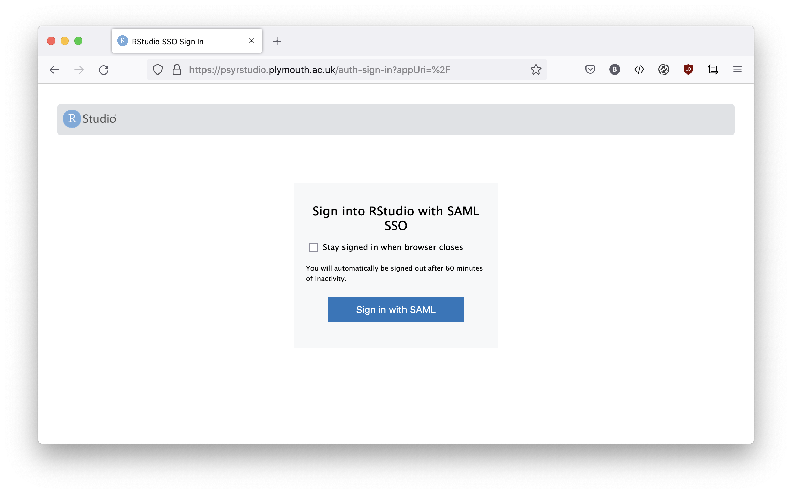
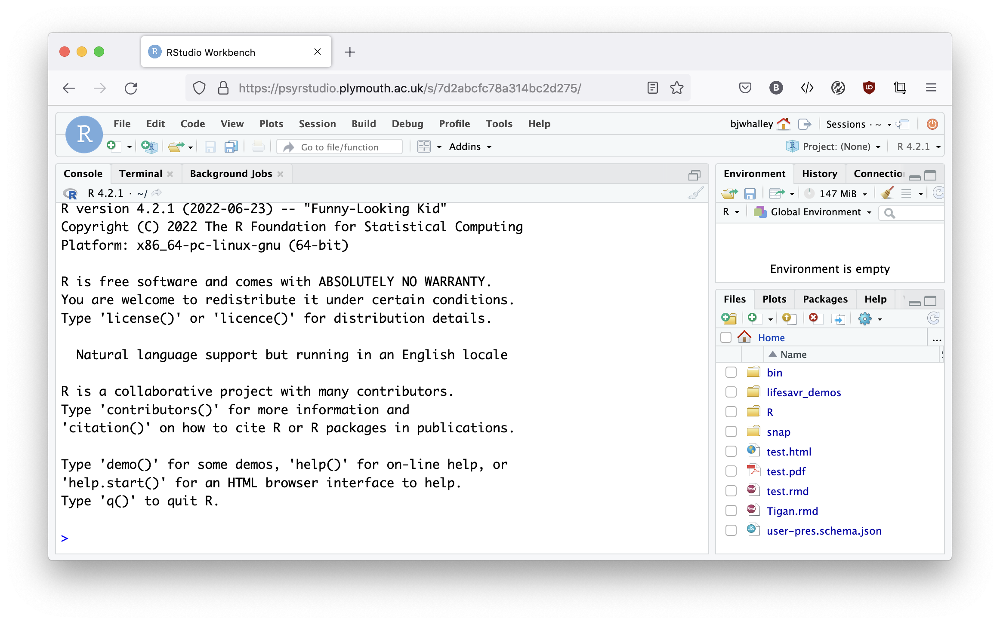

LifesaveR is a short course in statistics and data visualisation using R.
Quick links
The list below are links to each of the workshops. Read below, though, for an introduction to the course.
- Session 1: Getting started
- Session 2: Working with R
- Session 3: Grouped data
- Session 4: Describing patterns, answering questions
- Session 5: Quantifying evidence
- Session 6: Making predictions
- Session 7: Building models
- Session 8: Reporting outcomes
Overview
Learning R is a bit like learning a martial art. Yes, this analogy is clichéd, but we think the parallels are real. Learning a martial art goes something like this:
- As a novice you learn basic movements and techniques for self defence. If an attacker behaves as you expect you can block or counter-attack. But if something unexpected happens you might be confused or overwhelmed.
- As you gain expertise you learn general principles of movement and strategies to attack or defend. These let you to respond flexibly — so when things don’t unfold as you expect you are able to adapt and make good decisions. As you practice you get stronger and can be more effective.
- Finally, you become a master. You begin to see connections between techniques and can suggest new combinations or patterns to break through even sophisticated defences.
This is a lot like learning R.
- To begin with we show you the basics, but if your data aren’t in the right format, or something unexpected happens you can end up getting stuck. You make basic errors of style or form which leave you vulnerable.
- In this course we aim to teach general principles for working with data. Over time you will develop understanding and expertise that lets you combine techniques to solve new problems. With repeated practice your skills are honed and you gain strength.
- Later in your degree, and if you continue using R in your own work, you might develop mastery and really start to understand the core principles involved, solving problems in creative ways.
Practice makes perfect
One final way R and martial arts are similar is that there’s no substitute for practice. It’s simply not possible to ‘fake it’.
In martial arts, a blow to the head is direct and effective feedback that your basic skills like blocking or footwork need practice. In R, error messages and broken code can feel similarly unforgiving. The solution (in both cases) is to use failures constructively: ensure the basics are correct, and continue to train!
Mindset matters
You might ask what you can do to succeed on this course and make the most of your training.
Based on what we’ve observed in previous cohorts, the following attributes and approaches are what seem to us to correlate with success.
Go slow, be steady. Don’t move on until you’ve understood each section. It’s not a race or a competition with your peers (even if workshops can feel that way).
Be consistent. If you feel you might be slower than other students with this material allocate time to study outside of workshops now. Don’t leave work until the end of the year — we will be adding new material each week, so this is a recipe for falling behind.
Support each other, but make sure you are doing the work too. It’s nice to work as a pair or a group, and it can be great for your own learning to explain teachniques to others. But it’s also easy to forget that you must learn the material for yourself. Our advice is to swap partners every week or two to make sure you don’t get in a rut.
Persevere. Do all the exercises. Re-do parts of a worksheet if you didn’t understand them.
Be honest with yourself. Nobel physicist Richard Feynman once said, “The first principle is that you must not fool yourself, and you are the easiest person to fool.” We often find that students move through the material too quickly, skipping over practice exercises because they think they understand the techniques already and want to save time. This is almost always a false economy. If you skip early material you will get stuck later. The course is designed to build progressively: We will often re-use techniques learnt in earlier sessions. Sometimes this means revisiting old material to check your understanding. The reference worksheets are also useful to check previous content.
Preparation
Using these worksheets
These worksheets are designed based on student feedback over many years.
They are intended to be used in supported workshops, where students work at their own pace, individually or in pairs, with experts on hand to answer questions and resolve problems quickly. You can also use the worksheets alone, or without support, although we don’t recommend this; in the early stages students can often become stuck or demoralised when they are bogged down with lots of simple errors. Our strategy is to:
- State and show key techniques with the minimum of explanation.
- Give an expanded explanation in a video (video transcripts are available to read).
- Ask you to follow along with simple examples (e.g. by copying and pasting code).
- Pose additional problems to give you opportunities to apply your learning and check your understanding (here, you edit the example code).
Exercises and problems are presented in Blue boxes, like this.
It’s important to complete all the exercises.
Sometimes students find it helpful to return to earlier worksheets to repeat tasks to check they understand.
For each session there is an accompanying interactive workbook (explained below) which you should use to organise your work.
Where you see a green box like this, it’s a ‘tip’. We’ve highlighted this text because it’s especially important — for example because you will definitely need to know this to complete a later task.
Access to R
Throughout the module we use R for data processing and analysis.
If you are taking this course at Plymouth University, the easiest way to run the code examples here is to the school’s RStudio Server.
Unless you already have a lot of experience with R, don’t try to install it on your own computer. We find this creates unnecessary problems for students. Staff won’t help you debug your work unless they are evident when using the school RStudio server.
Try logging into the RStudio server now at https://psyrstudio.plymouth.ac.uk. You should see a login page like this:

And once logged in, an interface like this:

R Cheatsheets
We have posted a ‘cheatsheet’ for all the code used in our BSc and MSc psychology teaching materials here:
https://plymouthpsychology.github.io/cheatR/
Students who are more comfortable with R may find the “staff cheatsheet for project students” useful, because it is more concise and includes some additional techniques.
Topic index
This index links to all the important R functions and topics within the course.
- %>% pipe operator
- <- assignment operator
aes()function to defineggplot()axes, colour, etc.- Bayes Factor quantifies evidence for differences or correlations in a dataset
- boxplots visualise differences between categories or groups
- central tendency the “middle” of a set of values
count()function to count frequencies in categorical datacorrelate()function to calculate the correlation between two continuous variables- correlation coefficient number between -1 and 1, quantify a correlation between two continuous variables
correlationBF()function to quantify evidence for a relationship between two continuous variables- see
correlate() - see Bayes Factor
- see
- dataset grid of data values (rows and columns)
- data type format used by R to store data (factor, text, numeric, logical, etc.)
- errors
- factor R data type for storing categorical or ordinal data
filter()function to select rows from a dataset- frequency table table
counts (frequencies) by category
- see
count()
- see
geom_boxplot()function to create boxplotsgeom_point()function to create scatterplotsggplot()function to create plots- see also
aes()
- see also
glanceto calculate R2 and other statistics from a linear modelglimpse()function to list columns, plus a few datapointsgroup_by()function to create a groupeddata.frame(seesummarise())- hypotheses null and alternative (experimental)
- interquartile range central
50% of datapoints
- see spread
library()function to load packageslm(linear models) to run a linear model (regression)lmBFto calculate a Bayes Factor for two linear models. Also see see Bayes Factormean()summarise data using the meanmedian()summarise data using the median- Multiple regression
psydatapackage including datasets used in this module- package adds functionality to R
- R programming language for data science
- RMarkdown combine R code with regular text
- RStudio program for writing R and RMarkdown
- Regression (see
lm) - Residuals
- scatterplot show the relationship between two continuous variables
- spread the distribution of a set of values
sd()summarise data using the standard deviation- see spread
summarise()function to summarise data values- t-test compare the average score for two groups
ttestBF()function to quantify evidence for a difference between groups- see Bayes Factor
tidyverseessential package for this module- variable, a container for storing things (in R)
Troubleshooting
If you are having trouble with the RStudio interface, please do make sure you are running a new version of your browser. Google Chrome is recommended by the University, although if you are (rightly) concerned about your privacy Firefox also works well.
Andy Wills hosts a helpful guide to common errors students face here: http://www.andywills.info/rminr/common-errors.html
License
Unless otherwise noted, all content on this site distributed under a Creative Commons licence. CC-BY-SA 4.0.